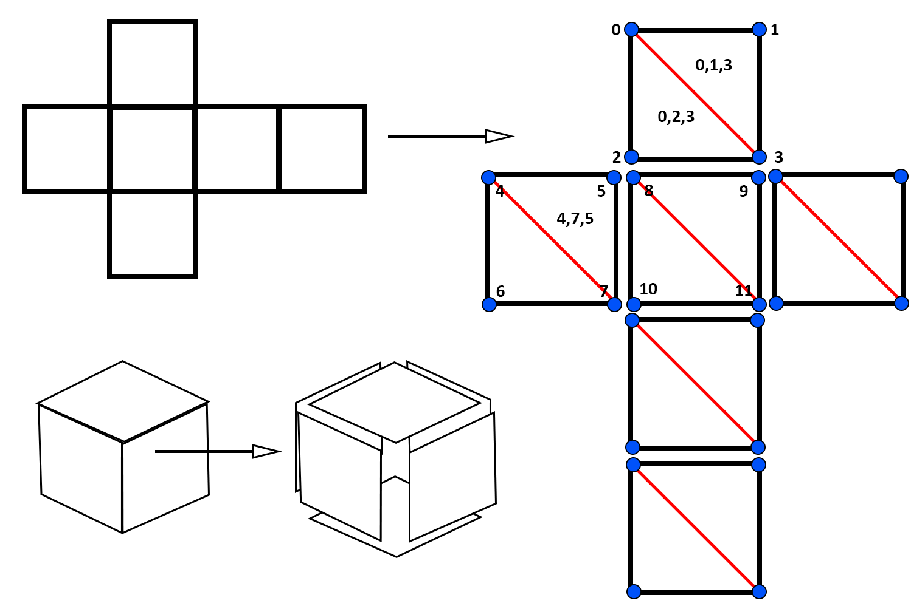
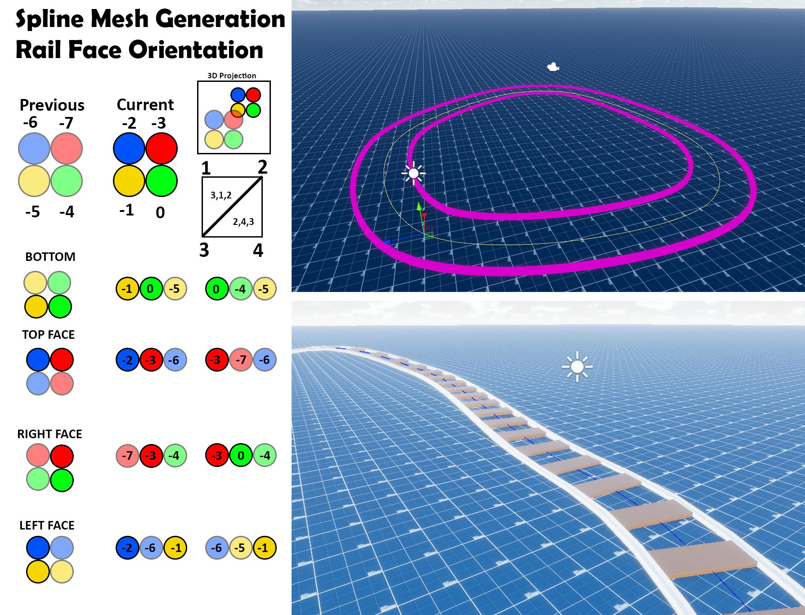
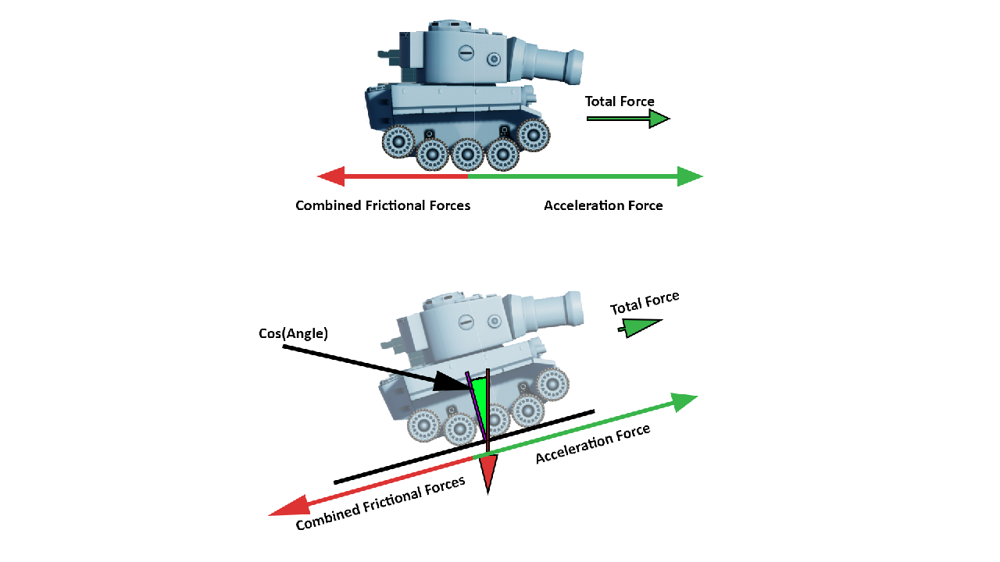
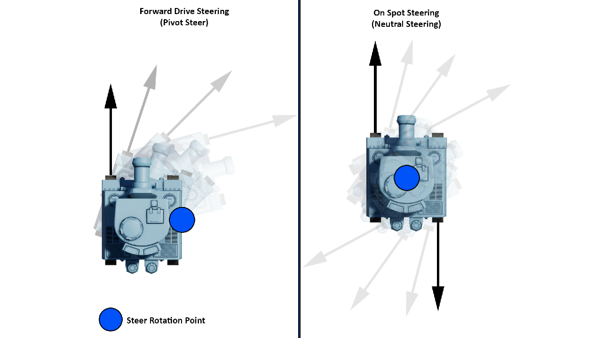
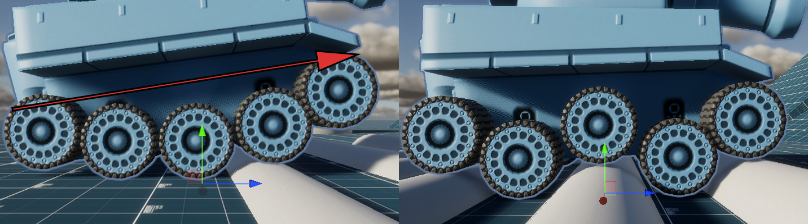
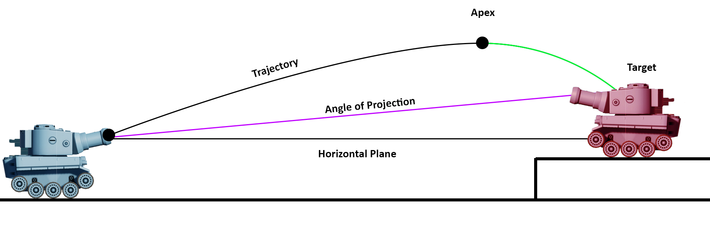
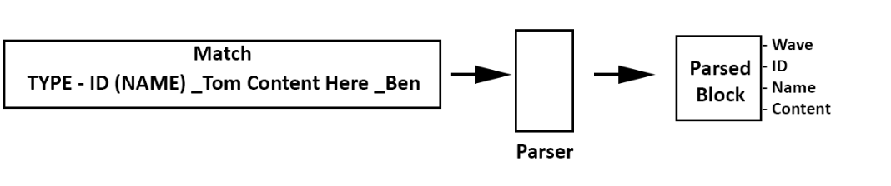
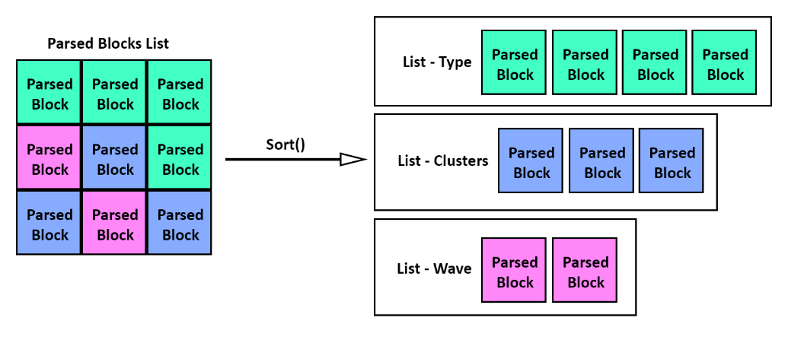

Advanced Mechanics Design
Unity Programming Module — 2nd Year
Advanced Mechanics Design is a 2nd Year module I was enrolled on at Staffordshire University. For this module there were 3 focuses that I would have to complete: Splines, a Tank Controller, and a Wave Spawner built with Unity ECS.
Team Size
- Solo
My Role
- Programmer
Duration
- Semester
Tech Stack
- Unity
- C#
Context
- University Module — 2nd Year
Technical Breakdown
Mesh Lofting
To procedurally generate meshes, first we need to know what a mesh consists of.
A mesh is a combination of vertices connected using edges. These edges can be used to create 3 types of faces: Tris (3 edges to a face), Quads (4 edges to a face), or N-Gons (5+ edges to a face).
A mesh has face normals which can only be viewed from one side unless backface culling is enabled on the mesh.
A UV Map is the faces of a 3D object flattened into a 2D view, in which coordinates on the UV map a texture onto a face.
To create our objects we create vertices. For this cube I have 24 vertices as it allows for hard edges and simple maths when creating the object.
With 3 of the vertices a Tri Face is created, this is then calculated and placed in the world.

Editor Handles
To create multiple mesh lofted objects I tweaked the code slightly to loop through a vector 3 for the number of cubes adding an offset after each one.
Within the code I also tweaked it so the shapes can alter scale instead of a fixed value which will allow me to make an editor handle.
The result is being able to create my rail sleepers which I use later for the spline mesh generator project. Additionally, I could have used this for my rails as I could have stretched cubes to create the length of the rail and set the number of Z chunks to 2 with an offset of about 4 to create the second set of tracks.
All I needed to do afterwards was curve the mesh along a spline.
Spline Mesh Lofting & Animation
Using a spline I achieved creating a procedural railway which adapts to terrain around it. There are multiple values that can be adjusted, as well as an animated train that follows the spline.
In creating the rails I wanted the vertices to be as one long mesh which subsequently has a continuous UV mesh because it would only use one flat colour.
I generate 4 vertices and create faces from the most recent set of vertex data to the previous, which allowed me to work backwards from the newest.
Once it reached the end I used a condition to generate the final piece of mesh.
If the spline did not loop it would close off the rails with a final face; if it did, it would generate one more set of faces connecting to the first vertices.
I then refactored some code from the Cube Generator to create the sleepers which connect the middle of the track. This was adapted from the cube code and it worked well — I would just have to multiply the width and height by the right and forward vectors to get the vertex point.
I then moved on to creating a pillar support system which uses data from the world to generate the mesh, linking all the scripts together so I can control the rail generation from one central point rather than each script individually. This helps keep values unified across the generation. For the pillar supports I would raycast down and check the distance; if it was greater than a minimum value it would generate a pillar.

Designs
Below are the designs for each tank force such as suspension, friction/drag, steering and drive forces.




Demo Videos
Parsing the TomBen Format
The TomBen format is a format that was given to us as the final part of the AMD module. In this we would have to create a wave spawner that uses these values in an ECS system.
The main problem with this file format is that it required a custom parser to read the values. I decided to make a parser for it using Regular Expressions so I could loop through the waves and clusters to get the number of desired units to spawn and when to spawn them.
Tom Ben Format

Sorting Blocks into Lists

Reading Units from Waves

Wave Spawning
Here are the final results of the wave spawner. This was an estimated 2 weeks for this section of the module — one video of the parsing, and another using the Entity Component System.
At a later point, possibly after graduation, I would like to investigate the Unity ECS system further as it has lots of capability when creating a game which needs multiple of the same entity.
Project Links